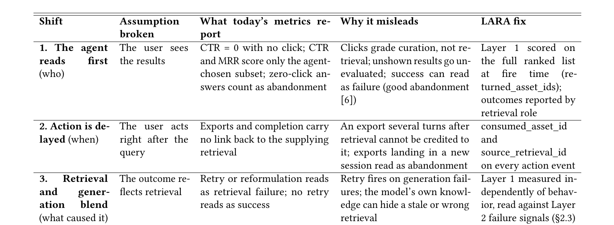
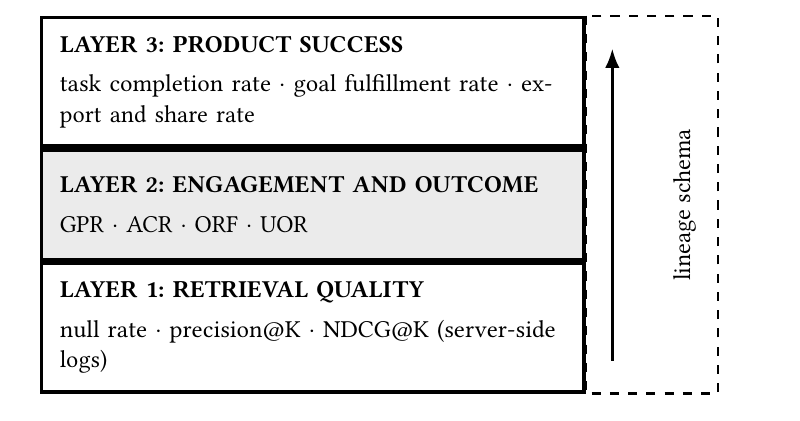
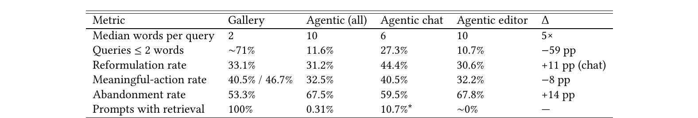

Adobe Express 的模板库搜索和智能助手用的是同一套检索系统，用户也是同一批人。按直觉，助手用户不看结果列表，改写查询应该更少；可实际上聊天入口的改写率是 44.4%，模板库只有 33.1%，反而高出 11 个点。原因是两边的“改写”不是一回事：模板库里改写，是结果不相关、换个词再搜；聊天里改写，多数是看到生成结果后想改一改，比如“再蓝一点”“换个粗一点的字体”。更意外的是，助手只在 0.31% 的提示上真正调用了检索。Adobe 的三位作者把这叫作归因缺口：CTR、MRR、行为 NDCG 都默认用户看到了排序结果并据此行动，而在智能助手里，这个前提从三个方向同时失效。论文提出的评估框架 LARA 用三层互相独立的测量，加上四个日志字段，把功劳重新归回检索，不需要训练任何新模型。
1. 问题：智能体先读，用户后到
作者认为失效来自三处结构性的变化，不是调参能解决的。
第一处变化是看结果的人换了。在模板库里，用户搜“生日邀请函”，翻了 40 个模板，点了其中一个，这次点击就是对检索的打分。在助手里，用户说想要一张生日邀请函，搜索子智能体取回模板，智能体挑一个直接做成设计，另外 39 个用户根本没见过。结果可能一次点击都没有，用户看到的东西也已经被智能体过滤、重排过。
第二处变化是行动的时间拉长了。同一个素材可能在第 1 轮和第 3 轮都被取回，到第 5 轮、甚至另一个会话里才被导出。日志里没有把这次导出和某次检索连起来的标识，只看时间，判断不了功劳该算给哪次检索。
第三处变化是结果说不清是谁造成的。结果不好，分不清是检索错了还是生成错了；结果好，也可能是模型悄悄补上了一次失败的检索。

没有按组件埋点，团队只能看重试、放弃、任务完成这些会话级指标。作者指出，单看重试会从两头出错：生成出了问题、和检索无关时，它照样会触发；模型替检索兜了底，它又不会有任何反应。后一种更难发现：检索其实出了错，但模型自己补上了答案，用户没有重试，在会话级信号里它和真正的成功看起来一模一样。
2. 方法：在最早能看到问题的地方测量
LARA 的原则是，每个环节的失败在哪里最早能被看到，就在哪里测它。所以它分三层，越往上越接近产品结果，也越依赖后面要讲的血缘字段。

第 1 层只问检索本身：子智能体有没有按正确的顺序返回正确的素材。指标是空结果率、precision@1、precision@K 和 NDCG@K，在检索触发的那一刻，用离线相关性标注（人工或 LLM 评审）对服务端日志算出来，和用户、智能体之后做了什么无关。CTR 在这里只当一个参考方向的次要信号。被模型掩盖的检索失败，只有这一层能发现。
第 2 层问返回的东西有没有被用上，以及有没有迹象表明检索错了。这一层把正面证据和失败证据分开统计，并且按“检索角色”分别报告。检索角色在检索时写进日志，说明这次检索是为了什么：直接找东西、找来看看、找来操作、给生成当参考、作为大任务里的一步，或者视上下文而定。这一层有四个指标：
- 真实正向率（GPR）：结果展示给用户后，用户主动用了返回素材的检索占比，比如拿它接着追问，或者选中、编辑、导出。
- 智能体消费率（ACR）：在同一个请求里、用户还没拿到结果之前，智能体就用了返回素材的检索占比，例如用户一句话让助手找个 logo 再去掉背景。这也算正面证据，但要单独统计，因为它只代表智能体的判断，用户后来的行动才是独立的确认。
- 可观察检索失败率（ORF）：检索之后出现三种检索专属信号之一的占比。一是用户指出取回的东西或路径不对；二是为同一个没解决的需求又搜了一次；三是流程本该用返回的素材，智能体却用了别的。用户保留素材、只修改编辑或生成结果，算作“下游纠正”，不算检索失败。1−ORF 要和 GPR、ACR 一起报告，但不能当作满意度。
- 未观察结果率（UOR）：既没有使用证据、也没有失败信号的检索占比。它单列一类，既不算放弃，也不算成功。
第 3 层问用户有没有达成目标。在创意工具里，最清楚的信号是导出、分享和下载。任务完成按检索角色来定义，目标是否达成则需要 LLM 评审或人工标注。只有当这些成功事件能通过血缘字段连回提供素材的那次检索，这一层才是检索的信号，否则它只反映产品整体健康度。
3. 两层对照着读，再补上四个日志字段
把第 1 层和第 2 层放在一起看，就能判断是哪个环节出了错：
| 第 1 层 | 第 2 层 | 诊断 |
|---|---|---|
| 低 | ORF 高 | 检索返回了错误素材 |
| 高 | ORF 低，下游纠正多 | 素材没问题，生成失败 |
| 高 | ORF 高（智能体拒用） | 智能体没用检索到的好结果，改用模型自己生成或记住的内容 |
| 低 | ORF 接近零 | 被模型掩盖的静默检索失败 |
最后一行最危险。没有第 1 层，这种失败完全看不见；有了第 1 层，检索一触发就能发现，不用等用户投诉慢慢积累。
第 2、3 层要成立，日志得能把行动连回检索。现在 Adobe 的生产日志里，检索事件和行动事件没有任何共同字段，作者提出用四个字段补上。第一个是每次检索带一个唯一的 retrieval_id。第二个是 returned_asset_ids，记录检索触发时的完整排序列表，而且要在生成层过滤、重排之前记；光有它就能算第 1 层，所以是性价比最高的一项改动。第三个是每个行动事件都带上 consumed_asset_id，不管行动来自用户还是智能体的工具调用。第四个是同一个事件上的 source_retrieval_id，指向提供这个素材的那次检索；已经放进文档的素材，则从放置事件继承这个字段。
这四个都只是日志增补，不是预测模型。source_retrieval_id 记在动作事件上，填的是实际提供这个素材的那次检索；素材放进文档以后，后续动作沿用放置那一刻记下的值。它指向的是某次检索而不是某个会话，所以同一素材被多轮重复取回、或者导出发生在新会话里，都能归因清楚。四个字段合起来，还能还原出被用上的素材在检索结果里排第几，和最后展示给用户的顺序无关。这样 RAGAs、ARES 这类 RAG 评估框架也能用直接归因，不必再靠时间先后去猜。
用一个例子把四个字段串起来：用户在聊天里说“找一张生日邀请函模板，把标题改成小明 6 岁生日”。检索事件记下 retrieval_id=r1 和 20 个候选。智能体选了第 4 个并改了标题，这是一条带 consumed_asset_id 和 source_retrieval_id=r1 的智能体事件，计入 ACR。两天后用户在编辑器里导出，导出事件继承 r1，计入第 3 层的“检索带来的导出”。如果没有这几个字段，这次导出会落在另一个会话里，原来的聊天会话被算成“放弃”。
4. Adobe Express 的生产数据
作者分析了 2026 年 8 月的生产会话。LARA 的血缘字段还没上线，所以下面所有“用没用上”的数字都是按时间推断的；会话数、用户数和查询数按 Adobe 的披露政策隐去了，只说模板库的量大约是助手的 8–9 倍。

这些数据从三个方面印证了第 1 节的说法。首先是智能体先读。如果把助手的所有对话都算进来，CTR 接近零。但 99.7% 的对话根本没调用检索，也就没有展示过任何检索结果，这些对话本不该进 CTR 的分母；把它们算进去，CTR 自然接近零。真正触发检索时，表现是正常的：空结果率 1.51%，每个返回的结果网格用户平均点约 1.05 次。要直接检验“智能体有没有用上结果”，得有 ACR，现在还算不出来。
其次是行动延迟。整个助手（聊天入口和编辑器内入口合计）的会话平均有 2.04 个提示，只看聊天入口是 2.65 个，同一个素材会在后面几轮反复出现。从聊天里发起的导出，在用户离开聊天界面后会记到另一个 session_guid 下。按会话归因，这些用户就被当成了放弃，所以聊天的放弃率（59.5%）被高估，参与度被低估。
最后是检索和生成混在一起。开头那个改写率反转就是例子：一个行为信号同时混着检索失败和对生成结果的微调，汇总出来的数字什么也说明不了。LARA 把它拆成两个：只在检索轮次统计的“搜索改写”，和在其他轮次统计的“下游纠正”。
按现有日志，团队今天能算的只有空结果率和每个网格的点击数。precision@K、NDCG@K 还需要 returned_asset_ids 和一份标注样本；GPR、ACR、ORF、UOR 需要另外三个字段和检索角色，目前只能靠人工标注轨迹。也就是说，团队能确认检索触发时是好用的，但还确认不了用户或智能体到底有没有用上返回的结果。
5. 意外发现：检索几乎没被调用
模板库搜索本身就是检索，而助手只在 0.31% 的提示上调用了检索，约 82% 的助手活动是生成式编辑，根本没有对应的搜索场景。作者认为更大的风险可能是该检索时没检索：规划器把“帮我找一张生日邀请函模板”交给了生成式编辑，没有检索事件，第 1 层自然也没东西可打分。表 3“带检索的提示”一行里，0.31% 是整个助手实际触发了检索的提示比例；聊天入口一栏是 10.7%，论文标注它只能参考方向，没有说明怎么统计。如果这 10.7% 反映的是用户本来想要检索的提示比例，那它和 0.31% 的差距就是对漏检索规模的第一个粗估。两者统计范围不同（一个只算聊天入口，一个算整个助手），所以也只能是粗估。
作者把规划器的路由叫作第 0 层，作为 LARA 的扩展，不算第四层。它有两个指标：误路由率，即调用了检索、但提示其实不在检索范围内的占比，这部分应该从第 1 层里剔除；漏检索率，即有检索意图却没触发检索的提示占比，这需要真实的意图标注。在 273 个提示的样本里，约 5–7% 同时含有两个以上不同的检索意图，所以路由还得能拆分多意图的请求。
6. 局限与实践意义
作者列出的局限很具体。所有证据来自一个部署，0.31% 和改写率反转可能只是这种以生成式编辑为主的创意助手才有的现象。血缘字段都还没上线，第 2 层的数字全是按时间推断的，检索角色也是事后推出来的，不是检索时记下的。聊天的放弃率被跨会话导出高估了。数据没有做格式和取值范围校验，合成流量是手工剔除的。延迟和每次成功任务花的 token 也没有分阶段埋点。LARA 只覆盖检索组件，智能体怎么理解意图、怎么生成查询、怎么拆分多意图请求，需要另外埋点。这是一篇行业短文，框架还没有在多个部署或线上实验里验证过。
作者给从业者的三条经验很实用。第一，不要把助手整体的 CTR 或改写率当成检索指标：检索指标只在触发了检索的轮次上统计，改写要拆成搜索改写和下游纠正。第二，先在检索触发时记下完整的排序列表，只有这个字段能让第 1 层算起来。第三，“用户主动使用”只定义一次，并且把定义公开：在 Express 聊天里，有效行动率（用户在回复后对结果做了有意义操作的比例）按计入哪些行为的不同，可以从 7.6% 变到 40.5%。可计入的行为有接着这个结果继续提问、选中、编辑、导出等，论文只给了两个端点，没有列出每个端点具体算了哪几种，也没有交代分母。定义不统一，数字就没法比。对正在把搜索嵌进智能体的团队，这篇论文最大的提醒是：当检索只在 0.31% 的提示上被调用时，要问的不只是排得好不好，还有它到底有没有被调用。
讨论
欢迎补充实验细节、复现经验或不同看法。需 GitHub 登录。
正在加载讨论…